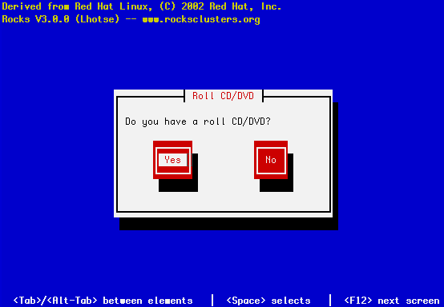

The perfSONAR Roll must be installed during the Frontend installation step of your cluster (refer to section 1.2 of the Rocks usersguide). Future releases will allow the installation of the perfSONAR Roll onto a running system.
The perfSONAR Roll is added to a Frontend installation in exactly the same manner as the required HPC Roll. Specifically, after the HPC Roll is added the installer will once again ask if you have a Roll (see below). Select 'Yes' and insert the perfSONAR Roll.
